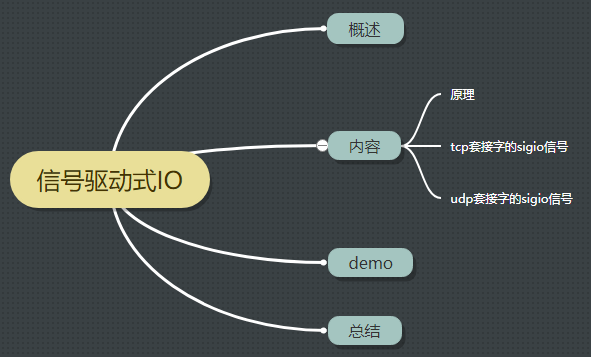
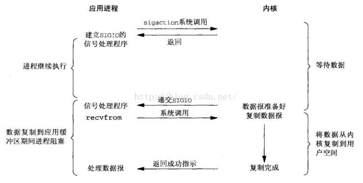

<!DOCTYPE HTML>
<html lang="zh-CN">
<head><meta name="generator" content="Hexo 3.8.0">
    <!--Setting-->
    <meta charset="UTF-8">
    <meta name="viewport" content="width=device-width, user-scalable=no, initial-scale=1.0, maximum-scale=1.0, minimum-scale=1.0">
    <meta http-equiv="X-UA-Compatible" content="IE=Edge,chrome=1">
    <meta http-equiv="Cache-Control" content="no-siteapp">
    <meta http-equiv="Cache-Control" content="no-transform">
    <meta name="renderer" content="webkit|ie-comp|ie-stand">
    <meta name="apple-mobile-web-app-capable" content="我的博客">
    <meta name="apple-mobile-web-app-status-bar-style" content="black">
    <meta name="format-detection" content="telephone=no,email=no,adress=no">
    <meta name="browsermode" content="application">
    <meta name="screen-orientation" content="portrait">
    <link rel="dns-prefetch" href="https://unistd68.yancoder.com">
    <!--SEO-->

    <meta name="keywords" content="IO,网络编程">


    <meta name="description" content="摘要：


1、脑图

2、概述
3、原理首先来看信号驱动IO的模型图：

解读：
首先，开启套接字的信号驱动式IO功能，并通过sigaction系统调用安装一个信号处理函数。此时，系统调用立即...">


<meta name="robots" content="all">
<meta name="google" content="all">
<meta name="googlebot" content="all">
<meta name="verify" content="all">

    <!--Title-->


<title>【原理】信号驱动IO | 我的博客</title>


    <link rel="alternate" href="/atom.xml" title="我的博客" type="application/atom+xml">


    <link rel="icon" href="/favicon.ico">

    


<link rel="stylesheet" href="/css/bootstrap.min.css?rev=3.3.7">
<link rel="stylesheet" href="/css/font-awesome.min.css?rev=4.5.0">
<link rel="stylesheet" href="/css/style.css?rev=@@hash">


    
	<div class="hide">
		<script type="text/javascript">
			var cnzz_protocol = (("https:" == document.location.protocol) ? " https://" : " http://");document.write(unescape("%3Cspan class='cnzz_stat_icon_1263868967 hide' %3E%3Cscript%20src%3D%22https%3A%2F%2Fs95.cnzz.com%2Fz_stat.php%3Fweb_id%3D1272564536%22%3E%3C%2Fscript%3E%3C/span%3E%3Cscript src='" + cnzz_protocol + "s19.cnzz.com/z_stat.php%3Fid%3D1263868967%26show%3Dpic1' type='text/javascript'%3E%3C/script%3E"));
		</script>
	</div>


    

</head>

</html>
<!--[if lte IE 8]>
<style>
    html{ font-size: 1em }
</style>
<![endif]-->
<!--[if lte IE 9]>
<div style="ie">你使用的浏览器版本过低，为了你更好的阅读体验，请更新浏览器的版本或者使用其他现代浏览器，比如Chrome、Firefox、Safari等。</div>
<![endif]-->

<body>
    <header class="main-header" style="background-image:url(http://snippet.shenliyang.com/img/banner.jpg)">
    <div class="main-header-box">
        <a class="header-avatar" href="/" title="unistd68">
            
        </a>
        <div class="branding">
        	<!--<h2 class="text-hide">Snippet主题,从未如此简单有趣</h2>-->
            
                 
            
    	</div>
    </div>
</header>
    <nav class="main-navigation">
    <div class="container">
        <div class="row">
            <div class="col-sm-12">
                <div class="navbar-header"><span class="nav-toggle-button collapsed pull-right" data-toggle="collapse" data-target="#main-menu" id="mnav">
                    <span class="sr-only"></span>
                        <i class="fa fa-bars"></i>
                    </span>
                    <a class="navbar-brand" href="https://unistd68.yancoder.com">我的博客</a>
                </div>
                <div class="collapse navbar-collapse" id="main-menu">
                    <ul class="menu">
                        
                            <li role="presentation" class="text-center">
                                <a href="/"><i class="fa "></i>首页</a>
                            </li>
                        
                            <li role="presentation" class="text-center">
                                <a href="/categories/前端/"><i class="fa "></i>前端</a>
                            </li>
                        
                            <li role="presentation" class="text-center">
                                <a href="/categories/后端/"><i class="fa "></i>后端</a>
                            </li>
                        
                            <li role="presentation" class="text-center">
                                <a href="/categories/工具/"><i class="fa "></i>工具</a>
                            </li>
                        
                            <li role="presentation" class="text-center">
                                <a href="/archives/"><i class="fa "></i>时间轴</a>
                            </li>
                        
                    </ul>
                </div>
            </div>
        </div>
    </div>
</nav>
    <section class="content-wrap">
        <div class="container">
            <div class="row">
                <main class="col-md-8 main-content m-post">
                    <p id="process"></p>
<article class="post">
    <div class="post-head">
        <h1 id="【原理】信号驱动IO">
            
	            【原理】信号驱动IO
            
        </h1>
        <div class="post-meta">
    
        <span class="categories-meta fa-wrap">
            <i class="fa fa-folder-open-o"></i>
            <a class="category-link" href="/categories/原理/">原理</a>
        </span>
    

    
        <span class="fa-wrap">
            <i class="fa fa-tags"></i>
            <span class="tags-meta">
                
                    <a class="tag-link" href="/tags/IO/">IO</a> <a class="tag-link" href="/tags/网络编程/">网络编程</a>
                
            </span>
        </span>
    

    
        
        <span class="fa-wrap">
            <i class="fa fa-clock-o"></i>
            <span class="date-meta">2018/12/07</span>
        </span>
        
    
</div>
            
            
    </div>
    
    <div class="post-body post-content">
        <p><strong>摘要：</strong></p>
<a id="more"></a>
<hr>
<h2 id="1、脑图"><a href="#1、脑图" class="headerlink" title="1、脑图"></a>1、脑图</h2><p></p>
<hr>
<h2 id="2、概述"><a href="#2、概述" class="headerlink" title="2、概述"></a>2、概述</h2><hr>
<h2 id="3、原理"><a href="#3、原理" class="headerlink" title="3、原理"></a>3、原理</h2><p>首先来看信号驱动IO的模型图：</p>
<p></p>
<p>解读：</p>
<p>首先，开启套接字的信号驱动式IO功能，并通过sigaction系统调用安装一个信号处理函数。此时，系统调用立即返回，进程继续工作，即未被阻塞。</p>
<p>当内核数据包准备好之后，内核就为该进程准备一个sigio信号，进程的信号处理函数捕获到该信号时，就进入信号处理函数，然后调用recvfrom进行</p>
<p>读取数据。</p>
<p>当数据完成从内核空间复制到用户空间时</p>
<hr>
<h2 id="4、tcp套接字的sigio信号"><a href="#4、tcp套接字的sigio信号" class="headerlink" title="4、tcp套接字的sigio信号"></a>4、tcp套接字的sigio信号</h2><hr>
<h2 id="5、udp套接字的sigio信号"><a href="#5、udp套接字的sigio信号" class="headerlink" title="5、udp套接字的sigio信号"></a>5、udp套接字的sigio信号</h2><hr>
<h2 id="6、demo"><a href="#6、demo" class="headerlink" title="6、demo"></a>6、demo</h2><hr>
<h2 id="7、总结"><a href="#7、总结" class="headerlink" title="7、总结"></a>7、总结</h2>
    </div>
    
    <div class="post-footer">
        <div>
            
                转载声明：商业转载请联系作者获得授权,非商业转载请注明出处 © <a href="" target="_blank">Snippet</a>
            
        </div>
        <div>
            
        </div>
    </div>
</article>

<div class="article-nav prev-next-wrap clearfix">
    
        <a href="/SQL语法/" class="pre-post btn btn-default" title="【原理】SQL语法">
            <i class="fa fa-angle-left fa-fw"></i><span class="hidden-lg">上一篇</span>
            <span class="hidden-xs">【原理】SQL语法</span>
        </a>
    
    
        <a href="/shell-commands/" class="next-post btn btn-default" title="【原理】常用shell命令">
            <span class="hidden-lg">下一篇</span>
            <span class="hidden-xs">【原理】常用shell命令</span><i class="fa fa-angle-right fa-fw"></i>
        </a>
    
</div>


    <div id="comments">
        
	
    <div id="vcomments" class="valine"></div>
    <script src="//cdn1.lncld.net/static/js/3.0.4/av-min.js"></script>
<script src="/assets/valine.min.js"></script>

    <script>
        new Valine({
            av: AV,
            el: '#vcomments',
            appId: 'xOKV9J4UeQAtVkvnJC7Kq2Jn-gzGzoHsz',
            appKey: 'erIpQac4azoCmgfBB7Dl9maa',
            placeholder: '说点什么吧',
            notify: false,
            verify: false,
            avatar: 'mm',
            meta: 'nick,mail'.split(','),
            pageSize: '10',
            path: window.location.pathname,
            lang: 'zh-CN'.toLowerCase()
        })
    </script>


    </div>


                </main>
                
                    <aside id="article-toc" role="navigation" class="col-md-4">
    <div class="widget">
        <h3 class="title">文章目录</h3>
        
            <ol class="toc"><li class="toc-item toc-level-2"><a class="toc-link" href="#1、脑图"><span class="toc-text">1、脑图</span></a></li><li class="toc-item toc-level-2"><a class="toc-link" href="#2、概述"><span class="toc-text">2、概述</span></a></li><li class="toc-item toc-level-2"><a class="toc-link" href="#3、原理"><span class="toc-text">3、原理</span></a></li><li class="toc-item toc-level-2"><a class="toc-link" href="#4、tcp套接字的sigio信号"><span class="toc-text">4、tcp套接字的sigio信号</span></a></li><li class="toc-item toc-level-2"><a class="toc-link" href="#5、udp套接字的sigio信号"><span class="toc-text">5、udp套接字的sigio信号</span></a></li><li class="toc-item toc-level-2"><a class="toc-link" href="#6、demo"><span class="toc-text">6、demo</span></a></li><li class="toc-item toc-level-2"><a class="toc-link" href="#7、总结"><span class="toc-text">7、总结</span></a></li></ol>
        
    </div>
</aside>

                
            </div>
        </div>
    </section>
    <footer class="main-footer">
    <div class="container">
        <div class="row">
        </div>
    </div>
</footer>

<a id="back-to-top" class="icon-btn hide">
	<i class="fa fa-chevron-up"></i>
</a>


    <div class="copyright">
    <div class="container">
        <div class="row">
            <div class="col-sm-12">
                <div class="busuanzi">
    
</div>

            </div>
            <div class="col-sm-12">
                <span>Copyright &copy; 2017
                </span> |
                <span>
                    Powered by <a href="//hexo.io" class="copyright-links" target="_blank" rel="nofollow">Hexo</a>
                </span> |
                <span>
                    Theme by <a href="//github.com/shenliyang/hexo-theme-snippet.git" class="copyright-links" target="_blank" rel="nofollow">Snippet</a>
                </span>
            </div>
        </div>
    </div>
</div>


<script src="/js/app.js?rev=@@hash"></script>

</body>
</html>